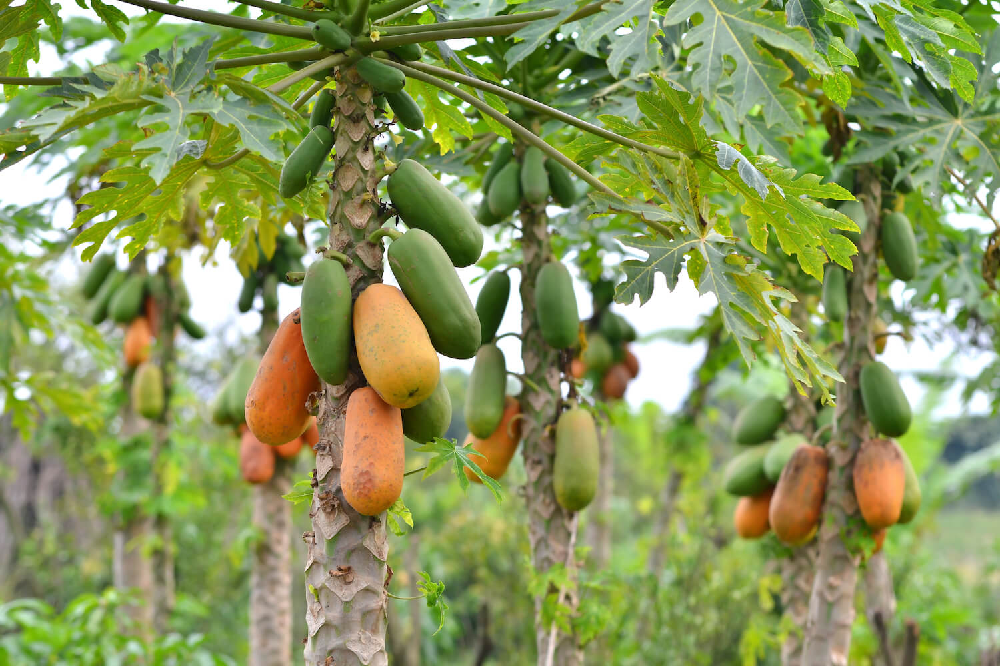

Pineapple
Pineapple (Ananas comosus) is an incredibly delicious, healthy tropical fruit. It's packed with nutrients, antioxidants, and other helpful compounds, such as enzymes that can protect against inflammation and disease.
Bananas
A banana is an elongated, edible fruit – botanically a berry – produced by several kinds of large herbaceous flowering plants in the genus Musa.
Mangoes
It is an edible stone fruit produced by the tropical tree Mangifera indica, member of the cashew family (Anacardiaceae). They are a rich source of vitamins A, C, and D.
Watermelons
Watermelon (Citrullus lanatus) is a flowering plant species of the Cucurbitaceae family and the name of its edible fruit.Watermelon is high in vitamins A and C, potassium, magnesium and antioxidants. Its seeds have magnesium, iron, healthy fats and zinc
Horned Melons
Cucumis metuliferus, commonly called the African horned cucumber, horned melon, spiked melon, jelly melon, or kiwano, is an annual vine in the cucumber and melon family Cucurbitaceae. Its fruit has horn-like spines, hence the name "horned melon".
Sweet Melon
The honeydew melon is one of the two main cultivar types in Cucumis melo Inodorus Group. It is characterized by the smooth rind and lack of musky odor.
Tree Tomato
The tamarillo (Solanum betaceum) is a small tree or shrub in the flowering plant family Solanaceae (the nightshade family). It is best known as the species that bears the tamarillo, an egg-shaped edible fruit. It is also known as the tree tomato
Passion Fruit
The passion fruit is the fruit of a number of plants in the genus Passiflora. Passion fruits are round or oval, and range from a width of 1.5 to 3 inches. They can be yellow, red, purple, and green. The fruits have a juicy edible center composed of a large number of seeds.

Papaya
Papaya is a soft tropical fruit with a yellowish-orange color. This species of fruit — which belongs to the Caricaceae family — is round and plump and comes in larger and smaller sizes.